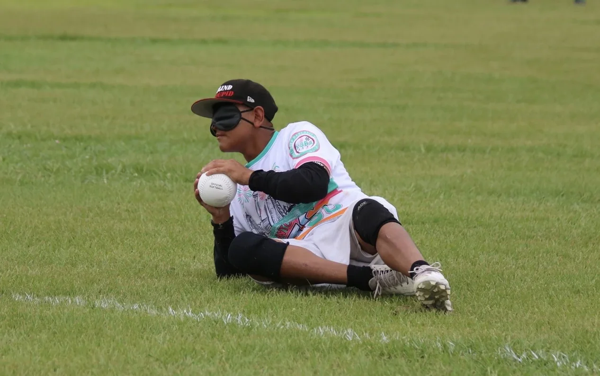

(02) Project management · EPICS
EPICS MOBI
A rugged, rechargeable beeping ball that lets visually impaired athletes play beep baseball, built by a team I led over two design cycles.

The brief
In beep baseball, visually impaired batters track a ball by sound. Our project partner needed a new ball that's loud, durable and doesn't need its batteries swapped. The requirements:
Everything (speaker, battery and PCB) also had to fit inside a softball-sized shell, with openings for charging and for sound to escape.
Leading the team
As Project Manager I ran 10 engineers through two 16-week design cycles. I set tasks and timelines, ran design reviews, and drove decisions on manufacturing methods and system integration between the mechanical and electronics sub-teams.
- Resetting the concept. The previous semester's spherical design hadn't worked. We reviewed past teams' concepts and went back to the proven cylindrical "beeper" architecture of the original beep baseball.
- Simplifying the interface. We chose a pull-pin on/off over a switch, because the pin and charger can share one rod and leave one fewer opening in the shell.
- Cutting unneeded parts. Acoustic testing showed we could likely hit 80 dB without a separate physical amplifier. That saved space, power and cost.
Reverse engineering
We started by cutting open an original beep baseball to see how its electronics were encapsulated, then measured the internal housing so our 3D-printed version would fit the same envelope.
Casing & acoustic chamber
I engineered the protective casing in CAD and through rapid 3D-print iterations, packing the electronics into a softball-sized form factor that withstood 100+ impact tests while staying rechargeable and structurally intact.
Loudness depends on geometry, so instead of guessing we built a test matrix of printed parts, varying one thing at a time:
- Cap holes: size and count of the sound openings.
- Speaker back: closed vs. vented air volume behind the speaker.
- Tube length: 33 mm vs. 66 mm, sized to harmonic wavelengths of the tone.
Result: a 33 mm tube, a closed-back speaker holder and a cap with many large holes gave the most output. That combination became the final assembly.
Electronics integration
I worked cross-functionally with the electronics team to integrate a 1,400 Hz, 80 dB system within the casing's mechanical limits. A 556 timer generates the tone, a DRV2700 boost driver powers the piezo, and a BQ25171 IC handles charging. The PCB went through three revisions and was shrunk to 40 × 25.25 mm to fit inside the ball. Bench tests measured roughly 75–80 dB at 2–3 ft.
Top skills utilized
- Team leadership
- Design reviews
- SolidWorks
- Rapid prototyping
- Design of experiments
- Impact durability
- Electromechanical integration